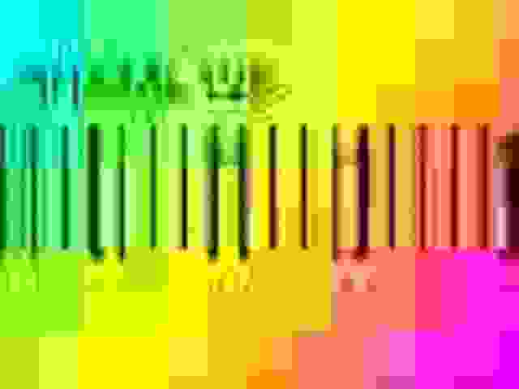
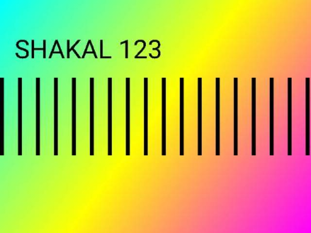
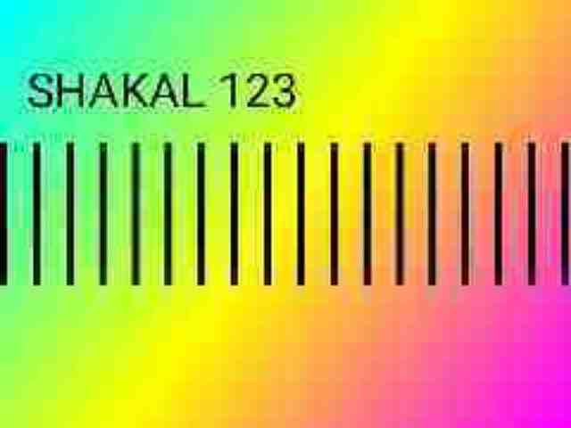
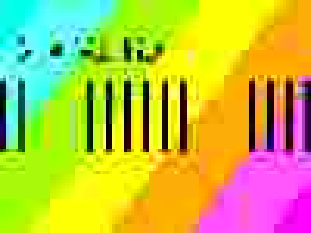

NATIVE ANDROID · 100% OFFLINE
Фото, которое
обрело душу.
Камера с характером пятидесяти пересылок. Благородное мыло, тёплые квадраты и честные JPEG-артефакты.
Бережно. В телефоне.
1.0.1 Preview · универсальный APK · без аккаунтов и водяных знаков

10/10 · шедевр пересылокНОВОЕ В 1.0.1
Ритм старой камеры.
До 20 новых кадров в секунду, нерегулярные провалы примерно до 10, полсекундные замирания. Частично случайно, частично — от яркости и движения. Настоящие пропуски кадров в итоговом MP4, лёгкий гостинг и программная имитация rolling shutter при быстром движении.
ШКАЛА ПРЕКРАСНОГО
У каждого артефакта
своя история.
Настоящие результаты Android-фотоалгоритма на синтетической картинке. Это примеры обработки, а не скриншоты с телефона.



Сначала — камера.
Снимай фото и видео. Переключай камеры, фокусируйся касанием, выбирай зум и свет. Или открой файл из галереи.
Потом — характер.
Выбери шакалов. Многократный JPEG для фото, два поколения H.264 и телефонный звук для видео. 12/10 живёт отдельно.
И сразу — в чат.
Сравни с оригиналом, добавь ещё шакалов, сохрани в галерею или отправь через меню Android. Без водяных знаков.
НАЧНЁМ С ПРЕКРАСНОГО
Три шага.
Ноль серверов.
Нужен Android 8.0 или новее. ARM64, ARMv7, x86 и x86_64 включены в один APK.
Открыть релиз →- Скачай и установи APK.Если Android спросит — разреши установку из браузера или файлового менеджера.
- Дай доступ к камере.Микрофон — отдельно и только для видео со звуком.
- Выбери уровень и снимай.Полный фильтр применяется после съёмки. В видоискателе — облегчённое превью.
БЕЗ МАГИИ В МЕЛКОМ ШРИФТЕ
Честный Preview.
Проверено локально
APK собран и подписан. 22 теста пройдены, Android Lint — без ошибок. Фото проверены на всех уровнях и трёх ресемплингах.
Ещё предстоит
Реальная камера, микрофон и аппаратные видеокодеки на телефонах пока не проверены. Это debug-сборка, не магазинный релиз.
Нативная адаптация
Видеошлейфы — GL-эффект, без повреждения битстрима FFmpeg. Видео до 60 секунд, фото до 2048 px. Интернет-разрешения нет.